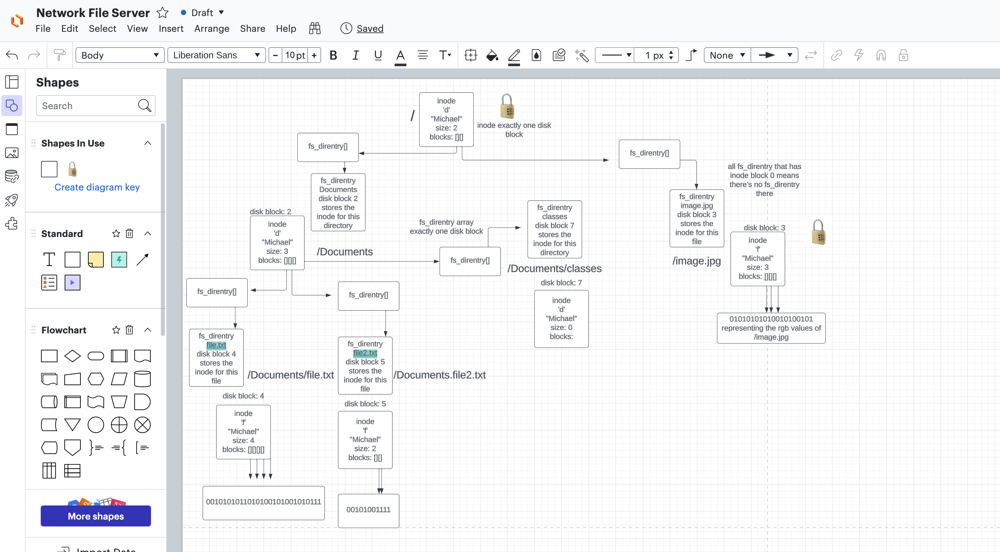
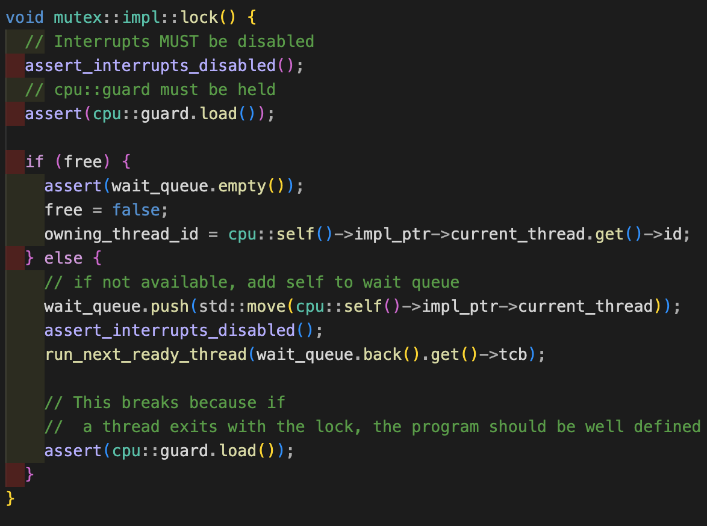
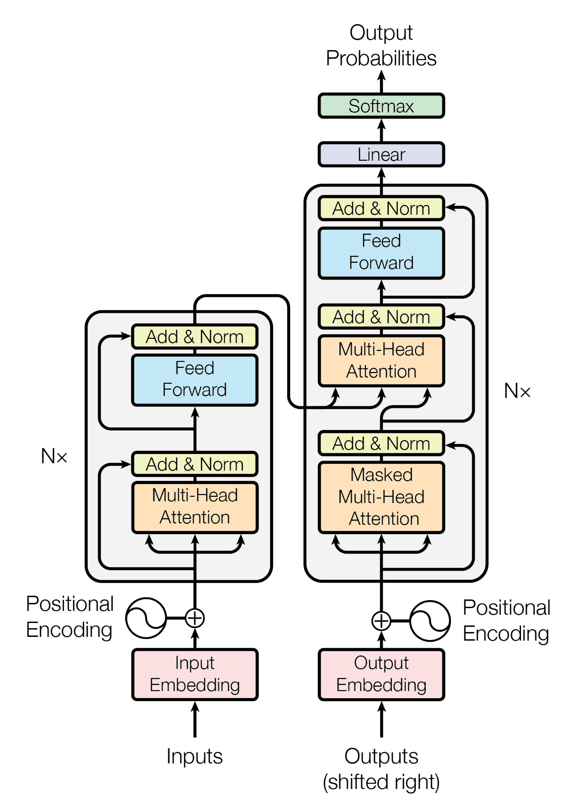

Hi, I'm Michael Yu.
I am


Hi, I'm a recent graduate of the University of Michigan with a B.S. in computer science 💻 with interests in algorithms, systems programming, and machine learning. I also like to keep up with world news and new technological developments.



The encoder-decoder of the Transformer architecture from “Attention Is All You Need“
August 2023
In machine learning, there are two broad classes of learning: supervised and unsupervised learning. In supervised learning, we know what the correct output is for certain input data. The goal then is to train the algorithm to learn to predict the correct output for future inputs. In unsupervised learning, our data is unlabeled. That means we don’t know what the correct output should be.
Read Article on Medium
June 2023
In the last decade, the life sciences industry has experienced booming growth fueled by cutting-edge technologies such as single-cell sequencing, gene-editing systems like CRISPR-CAS9, and synthetic biology, which have opened up new frontiers in scientific experimentation and data collection. However, managing the vast amounts of data generated by these breakthroughs presents a significant challenge to academics, scientists, and biotech companies.
Read Article on Medium
April 2023
How do we take in information and remember it, from the initial processing to when we consolidate it in our long-term memory? We take in information first from sensory inputs. This includes visual input, if we’re looking at a diagram, making sense of a picture, etc., as well as auditory, if we’re listening to a lecture, for example.
Read Article on Medium
November 2022
Upon a visit to Petite Friture’s website, I noticed that the French design brand hosts a collection of various small furniture items with rather minimalistic design. Their products include lamps, teacups, stools, among others. Recently, they have launched a new product: the Neotenic lamp.
Read Article on Medium